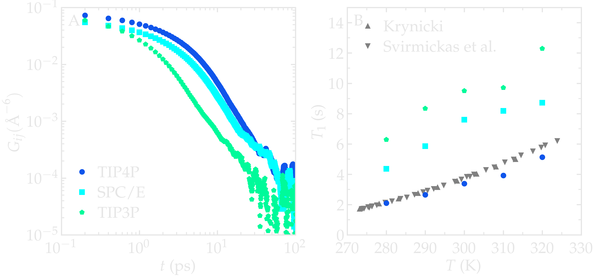
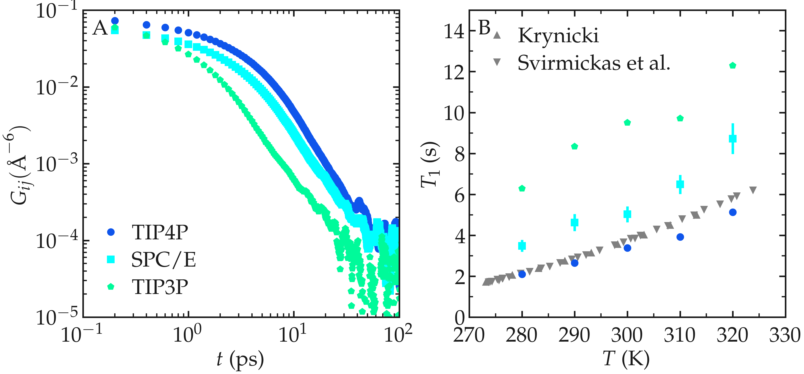
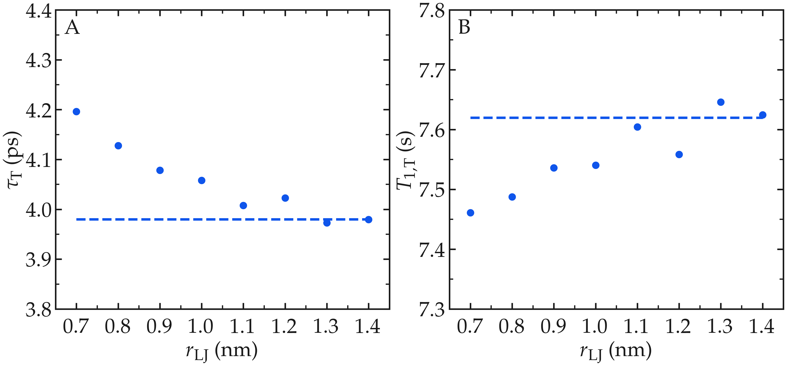
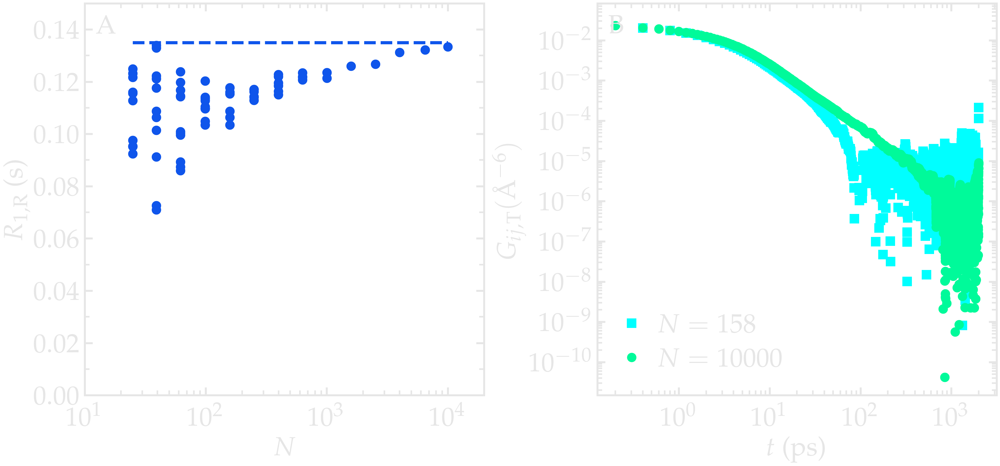
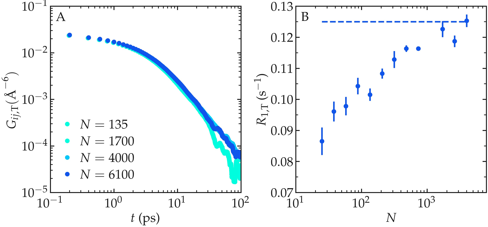
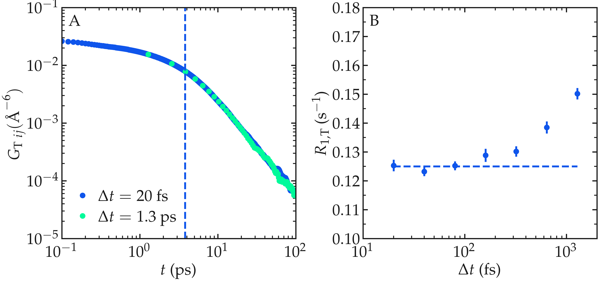

Best practices¶
Accurate NMR relaxation calculations from molecular dynamics simulations require careful attention to both the simulation protocol and the subsequent analysis. Because relaxation rates depend on molecular structure and dynamics over a broad range of timescales, they are sensitive to simulation parameters such as the force field, trajectory length, sampling frequency, simulation box size, and analysis settings. This section explores some of the main factors that influence the accuracy of NMR relaxation calculations from molecular dynamics and provides practical recommendations for obtaining reliable and reproducible results.
Choosing the force field¶
The agreement between experiments and simulations is limited by the quality of the chosen force field. While some force fields show excellent agreement with experimental data, for instance, in simulations of water, hydrocarbons, or polymer melts [9, 14, 20], it is important to remember that force fields are generally parametrized to reproduce selected thermodynamic, structural, and, in some cases, dynamical properties, but usually not NMR relaxation observables [26, 27]. These target properties may include densities, heats of vaporization, phase equilibria, solvation energies, radial distribution functions, or selected dynamical observables. However, NMR relaxation rates are determined by time correlation functions that depend on both the equilibrium structure and molecular dynamics. Consequently, force fields that accurately reproduce thermodynamic or structural properties may still yield inaccurate relaxation rates if they do not correctly describe the relevant molecular motions.
Impact of the water model¶
As an example, the NMR relaxation properties of bulk water were calculated from molecular dynamics simulations for three rigid water models, \(\text{TIP4P}-2005\) [28], \(\text{SPC/E}\) [29], and \(\text{TIP3P}\) [30], and a flexible water model, \(\text{TIP4P}--\epsilon \text{Flex}\) [].
Correlation functions extracted for all four models at \(T = 300\,\text{K}\) highlight the differences between them, with \(\text{TIP3P}\) showing much faster decorrelation compared to \(\text{SPC/E}\), which itself decorrelates slightly faster than \(\text{TIP4P}\). This ordering of the molecular dynamics timescales is consistent with the known viscosities of these models [31] at \(T = 298\,\text{K}\): \(0.321 \, \text{mPa s}\) for \(\text{TIP3P}\), \(0.729 \, \text{mPa s}\) for \(\text{SPC/E}\), and \(0.855 \, \text{mPa s}\) for \(\text{TIP4P/2005}\), and \(0.958 \, \text{mPa s}\) for \(\text{TIP4P}--\epsilon \text{Flex}\) model Among the models considered, the \(\text{TIP4P/2005}\) modes has a viscosity closest to the experimental value of \(0.896 \, \text{mPa s}\) [32].
The NMR relaxation time \(T_1\) was extracted as a function of temperature. The \(\text{TIP4P}-2005\) model shows excellent agreement with experimental measurements by Krynicki [33] and Hindman et al. [34]. By contrast, both \(\text{SPC/E}\) and \(\text{TIP3P}\) overestimate the relaxation time \(T_1\), consistent with their higher deviations in viscosity and with previous observations by Calero et al. [8].


Figure: A) Correlation functions extracted from molecular dynamics simulations for three water models: \(\text{TIP4P}\) (blue disks), \(\text{SPC/E}\) (cyan squares), and \(\text{TIP3P}\) (green pentagons) at \(T = 300\,\text{K}\). B) Temperature dependence of the NMR relaxation time \(T_1\) for bulk water obtained from molecular dynamics simulations using the \(\text{TIP4P}\), \(\text{SPC/E}\), and \(\text{TIP3P}\) models. Simulation results are compared with experimental measurements reported by Krynicki [33] and Hindman et al. [34].
The water example illustrates a more general principle: NMR relaxation provides a demanding test of molecular dynamics force fields because it is sensitive to both equilibrium structure and molecular motions over a wide range of timescales. Agreement with thermodynamic or structural properties alone does not guarantee accurate relaxation times. Consequently, NMR relaxation calculations from MD simulations can be used not only to interpret experimental measurements, but also to assess and compare force fields based on their ability to reproduce dynamical observables.
Simulation protocol¶
NMR relaxation calculations are sensitive to both thermodynamic and dynamical properties. To ensure accurate simulations, the simulation protocol must be carefully chosen alongside the force field discussed above. Important aspects of the simulation protocol include the integration timestep, cutoff distances, thermostat and barostat settings, and the equilibration procedure [35, 36]. An excessively large integration timestep introduces errors in the equations of motion, insufficient cutoff distances truncate relevant pair correlations, and inappropriate thermostat coupling parameters can artificially affect dynamical properties. These effects can alter the structural and dynamical properties of the system, which are directly reflected in the time correlation functions used to calculate NMR relaxation rates and can therefore lead to inaccurate relaxation predictions.
Cutoff¶
The cutoff distance used for non-bonded interactions can affect the accuracy of NMR relaxation calculations by modifying the intermolecular structure and dynamics of the simulated system. In particular, an insufficient cutoff may truncate long-range pair correlations, which can alter the intermolecular time correlation functions used to calculate relaxation rates.
As an illustration, the NMR relaxation time \(T_1\) of bulk water was calculated for different Lennard-Jones cutoff distances \(r_\text{LJ}\) using the \(\text{TIP4P}\) model. The intermolecular characteristic time \(\tau_\text{inter}\) shows a clear dependence on the cutoff distance, increasing by up to \(5\,\%\) for the smallest cutoff considered (\(r_\text{LJ} = 0.7\,\text{nm}\)). This reflects the weakening of intermolecular interactions caused by the truncation of the Lennard-Jones potential, which modifies the liquid structure and the molecular motions contributing to the intermolecular correlation functions. For a cutoff of \(1\,\text{nm}\), which is a commonly used value in molecular dynamics simulations, the deviation is reduced to approximately \(1\,\%\).
The variation of \(\tau_\text{inter}\) affects the calculated intermolecular contribution to the relaxation time \(T_1^\text{inter}\), which is slightly underestimated for the smallest cutoff. These observations are consistent with previous measurements [14] and highlight the importance of carefully selecting the cutoff distance when aiming to accurately reproduce NMR relaxation quantities.


Figure: a) Inter-molecular characteristic time \(\tau_\text{inter}\) as a function of the LJ cutoff. The dashed line is a guide to the eye, indicating the value obtained for the largest cutoff. b) Inter-molecular NMR relaxation time \(T_1^\text{inter}\) as a function of the LJ cutoff for a bulk water system.
Integration timestep¶
The integration timestep determines the numerical accuracy of the molecular dynamics trajectory. If the timestep is too large, the equations of motion are not accurately integrated, resulting in systematic errors in both structural and dynamical properties [37]. Since NMR relaxation rates are directly related to molecular motions, these integration errors can propagate into the calculated correlation functions and relaxation rates. The timestep should therefore be chosen according to established best practices for the selected force field and simulation conditions, and its adequacy should be verified through convergence testing when high accuracy is required.
Thermostat¶
The thermostat controls the temperature of the simulated system, but it can also influence molecular dynamics if applied too aggressively [38, 39, 40, 41]. Strong coupling or inappropriate thermostat parameters may artificially damp or modify translational and rotational motions, leading to biased time-correlation functions and relaxation rates. For NMR relaxation calculations, it is therefore important to employ a thermostat that preserves realistic dynamics and to use coupling parameters that minimally perturb the natural motion of the system.
Simulation length¶
The minimum simulation duration required to accurately calculate the NMR relaxation rate (e.g., \(R_1\)) depends on the quantity of interest. To obtain a converged value of \(R_1\) in the zero-frequency limit, the trajectory must be long enough for the correlation function \(G(t)\) to fully decay to zero, meaning the simulation duration must significantly exceed the longest correlation time \(\tau_c\) of the system. For frequency-dependent quantities \(R_1(f)\), the lowest accessible frequency is bounded by \(f_\text{min} \sim 1/T_\text{sim}\), where \(T_\text{sim}\) is the total simulation duration. Frequencies below \(f_\text{min}\) cannot be probed regardless of the trajectory sampling interval. In practice, convergence can be verified by comparing results obtained from simulations of increasing duration.
Box size¶
NMR relaxation measurements are sensitive to the finite-size effects that can occur with small simulation boxes [6].
As an illustration, the NMR relaxation rate \(R_1\) was measured for water with different number of molecules \(N \in [100,\,10000]\), which correspond to equilibrium box of lateral sizes \(L \in [1.4,\,6.7]\,\text{nm}\). Our results show that the inter-molecular relaxation rate \(R_1^\text{inter}\) is sensitive to the box size even for the largest boxes considered here. With small box size, the tail of \(G_\text{inter}\), which decreases as \(G_\text{inter} \sim t^{-3/2}\), is cutoff which lead to an error on \(R_1^\text{inter}\). Note that \(R_1^\text{intra}\), which is the dominant contribution to \(R_1\) for water at ambient temperature, is barely affected by the box size and therefore the resulting error induced on the total relaxation rate \(R_1\) remains small for \(N > 1000\).


Figure: A) Inter-molecular NMR relaxation rate \(R_\text{1, T}\) as a function of the number of molecules \(N\) for a bulk water system. For the smallest systems, results were averaged from up to 10 independent simulations and the error bar is calculated from the standard deviation. The dashed line is a guide to the eye, indicating the value obtained for the largest value of \(N\). b) Inter-molecular correlation function \(G_{ij, \text{T}}\) for two different numbers of molecules, \(N = 158\) (cyan squares) and \(N = 10000\) (green disks).
Trajectory output frequency¶
The trajectory output frequency sets the temporal resolution of the analysis and determines the shortest correlation times that can be resolved. The sampling interval \(\Delta t\) must be significantly smaller than the shortest relevant correlation time in the system, otherwise fast molecular motions are not captured and the correlation function \(G(t)\) is undersampled. This leads to an overestimation of the characteristic times \(\tau\), and consequently to errors in the computed relaxation rates. If the characteristic correlation times of the system are not known a priori, the appropriate \(\Delta t\) should be identified from convergence testing. Note that a small sampling interval increases the size of the trajectory files and the computational cost of the analysis.
As an illustration, the NMR relaxation time \(T_1\) of bulk water was measured for sampling intervals ranging from \(\Delta t = 0.02\,\text{ps}\) to \(5\,\text{ps}\). Using a sampling interval larger than approximately \(\Delta t = 0.5\,\text{ps}\) leads to a significant underestimation of \(T_1\), accompanied by an overestimation of the inter-molecular characteristic time \(\tau_\text{inter}\). Both effects are consistent with insufficient sampling of fast rotational and translational motions of the water molecules.


Figure: A) Intermolecular NMR relaxation time \(T_\text{1, T}\) as a function of the trajectory dumping frequency \(\Delta t\) for a bulk water system at \(T = 300 \text{K}\). The dashed line show the value for \(T_1\) for \(\Delta t \to 0\). B) Intramolecular NMR relaxation time \(T_\text{1, R}\) as a function of \(\Delta t\).
Analysis parameters¶
The accuracy of NMR relaxation calculations depends not only on the quality of the molecular dynamics simulation, but also on the parameters used during the analysis. While these parameters do not alter the underlying trajectory, they can affect the statistical uncertainty of the results or determine which physical contributions are included in the calculation. Their influence should therefore be assessed through appropriate convergence tests.
Number of reference atoms¶
The parameter number_i controls how many reference atoms are randomly
sampled during the calculation. Because the selection is stochastic,
results will vary slightly between runs when number_i > 0. The
statistical uncertainty decreases as number_i increases, and
setting number_i = 0 includes all eligible atoms, providing the
most accurate result at the highest computational cost. In practice,
convergence should be verified by repeating the calculation with
increasing values of number_i until the relaxation rates stabilize.
Cross-species interactions¶
When neighbor_group is not specified, intermolecular contributions
are computed only between atoms belonging to the same chemical species.
In a mixture such as polymer–water, this means that water–polymer
cross-interactions are excluded from the relaxation calculation. If
cross-species contributions are expected to be significant, the
appropriate neighbor_group must be set explicitly. Neglecting
these contributions may lead to an underestimation of the total
intermolecular relaxation rate.
Parameter |
If not properly chosen |
Consequence |
|---|---|---|
Force field |
Incorrect description of molecular structure or dynamics |
Systematic deviations in relaxation rates due to inaccurate structural properties, molecular motions, or correlation times. |
Simulation protocol |
Inappropriate timestep, cutoff distances, thermostat/barostat settings, or equilibration procedure |
Errors in structural and dynamical properties, leading to inaccurate correlation functions and relaxation rates. |
Simulation length |
Trajectory duration insufficient for correlation functions to fully decay |
Incomplete convergence of relaxation rates, especially in the low-frequency limit. |
Box size |
Simulation box too small, causing finite-size effects |
Truncation of long-time intermolecular correlations and underestimation of intermolecular relaxation contributions. |
Trajectory output frequency |
Sampling interval too large compared with relevant correlation times |
Fast molecular motions are undersampled, causing errors in correlation functions and relaxation rates. |
Number of reference atoms |
Too few atoms sampled during the calculation |
Increased statistical uncertainty and reduced precision of the calculated relaxation rates. |
Cross-species interactions |
Interactions between different chemical species are not included |
Underestimation of intermolecular relaxation contributions in mixtures. |